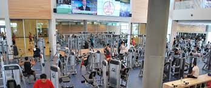

Portfolio



Hello! My name is Gabriella Raimondi and I attend UC Riverside as a Creative Writing Major. I have always had a passion and gift for writing and have chosen to create a path in my career with it. In doing so, I have helped many peers and students of all ages improve their writing skills through multiple resources. I enjoy writing creatively whether it is fiction or nonfiction. Not only do I engage in writing stories, I also engage in writing critical articles regarding information about our society and the economy.
I have completed my first year of college here at the University of California, Riverside and have already learned so much. Not only did taking the correct classes for my creative writing track improve my skills, my breadth course classes had surprisingly helped me as well. When taking dance of popular culture, I had to learn to write analytic memoirs describing movements of the body and setting within dance and culture. It had helped me improve on areas I had been lacking on such as description of settings.
Since high school, I was notorious for having great skills in writing essays. I had tutored many students from elementary to high school on writing. When time came around for college applications, I had helped many peers in revising their college essays and work on their improvements to help succeed them into their dream schools. I also work with kids in elementary school who struggle to catch onto their comprehensive skills. When starting at a young age, this can be easy to correct. I began to help them read and pronounce words as well as their writing skills and grammar errors. I would make my young students write a one to two page paper on each chapter to prove that they are truly understanding the material and not just mindlessly reading. With that being said, I feel as if I could be a great fit to help tutor your kids!
• Improved kids skills in reading and writing
• Tutored kids of all ages from elementary to high school
• Assinged homework to improve crytical and analytical skills
• Responsible for taking care of kids needs
• Assigned chores for around the house
• Clean up all areas before and after use
• Monitor all memebers for their saftey
• Set up and take down equipment